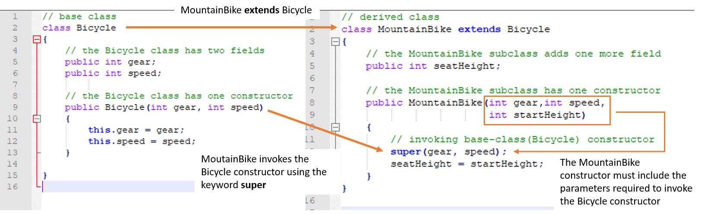

Because the MountainBike class extends the Bicycle class, MountainBike is able to access all the public methods and variables associated with Bicycle. This concept is illustrated below,

Inheritance is an important pillar of OOP(Object Oriented Programming). It is the mechanism in java by which one class is allow to inherit the features(fields and methods) of another class.
Important Terminology
The short video below provides an overview of this concept
The keyword used for inheritance is extends.
class derived-class extends base-class
{
//methods and fields
}
In the below example of inheritance, class Bicycle is a base class, class MountainBike is a derived class which extends Bicycle class and class Main is a driver class to run program.
In the above example, the Bicycle class is refered to as our Superclass. The MountainBike class is referred to as our Subclass. By using the work "extends" in the MountainBike class, the MountainBike class inherits all the methods and state variables of the Bicycle class.
As previously mentioned, the keyword extends causes a subclass to inherit all the methods and state variables of its super class. This is also true for the constructor.
To invoke the constructor of a super class the keyword super is used. This concept is illustrated below.
There are some significant features of inheritance illustrated above. In the absence of super(gear, speed), the MountainBike constructor would have tried to automatically call the Bicycle constructor and would have failed, since the Bicycle constructor requires two parameters and we would not have supplied these. By making super(gear, speed) the first line of code, we are able to supply the needed parameters. When used, super() must be the first line of code in the constructor of the subclass.
Because the MountainBike class extends the Bicycle class, MountainBike is able to access all the public methods and variables associated with Bicycle. This concept is illustrated below,
The inheritance of one class from another follows an "IS A" relationship. That is, a mountain bike "IS A" bicycle. The reverse is not true however. For example, a bike is not necessarily a mountain bike. When creating objects from super and sub classes, this relatioinship becomes important.
Consider the following hierarchy of inherited classes between bicycles

The above heirarchy shows the relationship among the classes in a program. According to the heirarchy
When creating objects from super and sub classes this relationsihp is enforced. This is illustrated below,

Another way to think of this is that "parents can make children, but children cannot make parents"
Any time when a parameter is expecting to receive an object of a particular type, it is acceptable to send it an object of the same class or a subclass, but never of a superclass. This is because the passed class object inherits all the methods of the object. If you attempt to pass an object of a parent class, the expected object may not have all the expected methods. Consider the following hierarchy of classes where each class is a subclass of the class immediately above it.

Suppose there is a method with the following signature:
public void theMethod(Male ml)
The method theMethod is clearly expecting a Male object; therefore, the following calls to this method would be legal since we are either sending a Male object or an object of a subclass:
Male m = new Male();
theMethod(m); //ok to send m since it’s expecting a Male object
Boy b = new Boy();
theMethod(b); //ok to send b since b is created from a subclass of Male
Since theMethod is expecting a Male object, we can’t send an object of a superclass.
Person p = new Person();
theMethod(p); //Illegal
theMethod((Male)p); //Legal if we cast p as a Male object